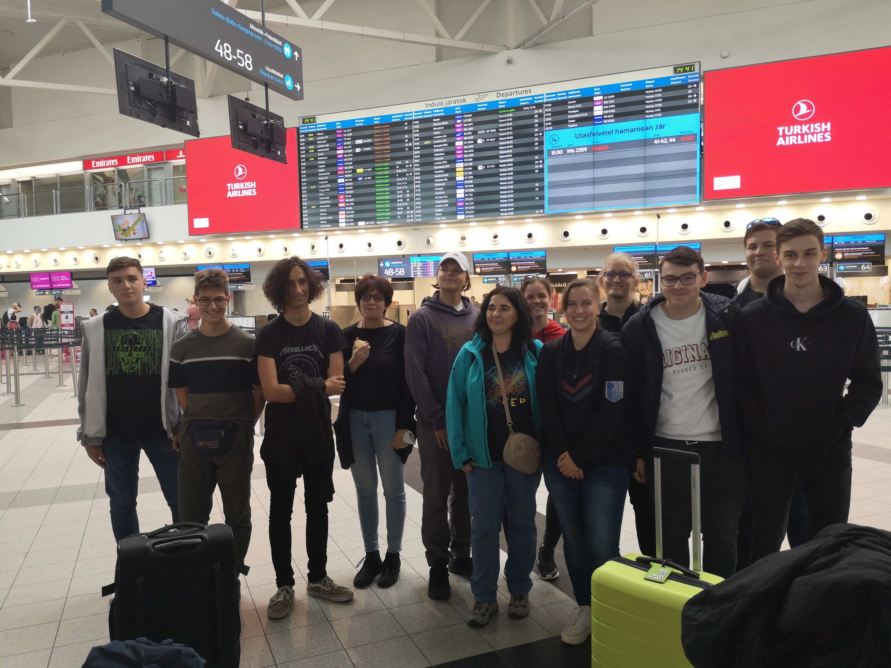

Írországi út beszámoló
Mikor először hallottunk az Erasmus által lehetővé vált külföldi útról, sokunknak az első gondolata az volt, hogy ez milyen remek lehetőség az utazásra és az angol nyelv gyakorlására, éles helyzetben. Sokan közülük még nem repültek előtte, ez is csak fokozta az érdeklődésünket. Az angol tanárok egy beadandó munkánk alapján választották ki a szerencsés diákokat, akik részt vehettek a programban. Úticélnak Írországot választottuk, ami remek döntés volt, hisz egészen más kultúrát ismerhettünk meg.
Az előkészületek nem voltak egyszerűek. Számunkra maga a gondolat, hogy két heti tananyagot kell majd bepótolnunk rémisztő volt, de a tanárok biztosítottak arról, hogy meg fogjuk kapni a szükséges segítséget hozzá. Az időpont az utazásra többször változott és a szerződéseket sem volt egyszerű intézni. Többször kellett órák után az iskolában maradnunk, hogy az utazással kapcsolatos papírokat egyeztessük. Probléma volt még a COVID oltást beiktatni pár diáknál, de végül szerencsére azt is meg tudtuk oldani és végre készen álltunk a szeptemberi utazásra.
Szeptember 11-én kora délután találkoztunk a repülőtéren és a problémamentes repülőút után az Írországi repülőtéren teljesen véletelenül találkoztunk a minket fogadó Erasmus-os hölggyel, aki elvezetett minket, már sötétben, a kisbuszhoz, amely egy igazán érdekes utazásra vitt el minket. A sofőr nem kímélte a járművet a kanyarokban, ráadásul felesleges köröket is tettünk, mert nem tudták merre kellene mennünk. Elsőnek érdekes módon az osztályfőnökünket tették ki, majd szép sorban mindenkit a családokhoz juttattak. Izgalmas és stresszes volt, hisz nem tűnt túlságosan megszervezettnek az utazásunk ezen része, de a végén mindenki hazaért és álomra tudta hajtani a fejét
Szeptember 11-én, kora délután találkoztunk a repülőtéren és a problémamentes repülőút után az írországi repülőtéren teljesen véletelenül találkoztunk a minket fogadó Erasmus-os hölggyel, aki elvezetett minket, már sötétben, a kisbuszhoz, amely egy igazán érdekes utazásra vitt el minket. A sofőr nem kímélte a járművet a kanyarokban, ráadásul felesleges köröket is tettünk, mert nem tudták merre kellene mennünk. Elsőnek érdekes módon az osztályfőnökünket tették ki, majd szép sorban mindenkit a családokhoz juttattak. Izgalmas és stresszes volt, hisz nem tűnt túlságosan megszervezettnek az utazásunk ezen része, de a végén mindenki hazaért és álomra tudta hajtani a fejét.
Külföldi eggyüttműködés
Szöveg........